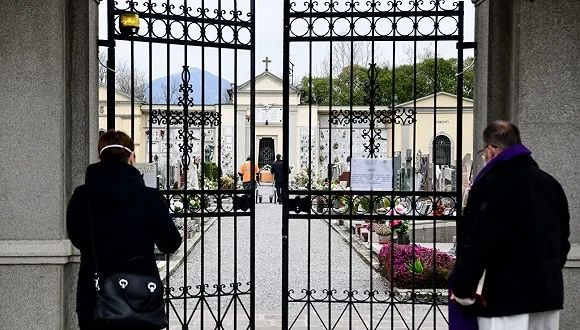

确诊7375例！床位告急、医护感染…意大利不仅封城，全国电影院、博物馆也关了
原文链接 备份链接 根据当地时间3月8日18时意大利卫生部公布的最新数据，意大利现有新冠病毒患者6387例，死亡366例，治愈622例，累计确诊感染新冠病毒总人数为7375例，较3月7日18时新增1492例，新增133例死亡病例。 据外 …

意大利伦巴第大区一场闭门葬礼。图片来源：The Local
记者：肖恩
“
出院后马提亚说，“呼吸是最简单又最美妙的事。”
”
2020年3月23日，38岁的马提亚（Mattia）终于结束了与新冠病毒长达一个月的搏斗，以胜利者的姿态离开了医院。
在伦巴第当局播放的一段音频中，马提亚说：“你可以从这种疾病中被治愈。”但以他为起点的意大利新冠肺炎疫情却远未看到终点。
截至23日，意大利累计确诊新冠肺炎患者63927例，单日新增4789例。当马提亚被纳入7432名治愈者之列前，他的父亲已在19日病逝，成为6077名逝者之一。
马提亚并不是意大利首例确诊的新冠病例。据界面新闻此前报道，意大利最早出现的新冠病人是一对来自武汉的游客夫妇，于1月31日在罗马被确诊。一周之后，另一名曾到访武汉的男子也在意大利确诊。由于及时发现和隔离，这三例来自中国的输入性病例并未扩大传染，因此也不被认为是流行病学意义上的“一号病人”。
意大利疫情发展成燎原之势的“起火点”，出现在距罗马600公里的伦巴第大区一个名为科多尼奥（Codogno）的小镇。马提亚是这个与中国联系甚少的小镇的第一例病例，也是意大利确诊的第一名本国公民，被认为是意大利的“一号病人”。
2月14日，马提亚感到不适，家庭医生给他开了一些治疗流感的药物。但马提亚的症状始终没有缓解，在16日前往科多尼奥镇医院就医，医生稍作检查后让他回家休息。两天后马提亚又前往医院急诊，被诊断为轻微肺炎，但仍未住院。因为他此前从未前往中国，医生并未想起当时在欧洲仍处于“潜伏”状态的新冠肺炎。
19日凌晨，马提亚开始出现呼吸困难的症状，于是第三次前往医院，但只进了普通病房。这时他的妻子回忆起，他在2月初曾跟一名有中国旅行史的朋友聚餐，但这名朋友后经测试显示并未感染。
直到20日下午4点左右，医院才对马提亚进行了新冠肺炎检测。这时马提亚病情已经加重，被送进重症监护室。在这之前，有多名家属和朋友前来探望，并自由出入马提亚的病房。
2月21日，马提亚新冠病毒检测呈阳性。随后他被转移到帕维亚的一家医院隔离治疗。
治疗期间，马提亚病情一度恶化，被送进重症监护室急救18天，直至3月8日才恢复自主呼吸。出院后，马提亚说，呼吸是最简单又最美妙的事。他还呼吁大家待在家里，因为只有预防才能阻止感染。
从马提亚出现症状到确诊，历经一周时间；从进入医院到到隔离治疗也花费了36小时。医院应对滞后，给病毒创造了充裕的传播档期。
有医院工作人员抱怨称，医院在得到马提亚阳性检测结果的几个小时后，才向医务人员通报疫情风险，没有及时关闭急诊室进行消毒。
最终马提亚将病毒传播给了至少13名意大利人，包括他怀孕的妻子、一位跟他一起跑步的朋友、三位他父亲酒吧的老年常客和八名科多尼奥镇医院的医生、护士和病人，成为意大利第一起社区传播的集聚性感染案例，被认为是“超级传播者”。其中一名被他传染的77岁女性已经病逝。

图片来源：《卫报》
而在出现症状前，身为联合利华公司员工的马提亚还频繁参加社交活动。据《纽约时报》报道，他在2月份至少参加了三次晚宴，还前往球场踢球。这意味着被他感染的人数可能更多。
从马提亚确诊的第二天起，意大利北部地区的确诊病例开始呈指数型增长，并逐渐扩向全国。2月23日，意大利感染人数已经超过130人，科多尼奥小镇成为意大利首批11个封锁的市镇之一。伦巴第大区也成为意大利乃至整个欧洲疫情爆发的中心，截至3月23日，伦巴第大区累计确诊28761例，死亡3776例。
“这不是一波浪潮，是一次海啸。”伦巴第大区蒙察市医院重症监护室负责人罗娜（Roberto Rona）说。
意大利总理孔特在2月24日不点名地指责科多尼奥镇医院存在管理失误，是意大利病例激增的原因之一。孔特称该医院没有遵守传染病相关流程规范，但没有具体说明是什么流程。
有意大利医生怀疑，在马提亚感染之前，新冠病毒已经在意大利蔓延。还有说法称，去年底一批因肺炎死亡的患者感染的就是新冠肺炎，但无法得到证实。
流行病学专家普雷里阿斯科（Fabrizio Pregliasco）表示，所谓的“一号病人”搞不好是“200号病人”。
从隔离城镇，到封闭大区，最后“锁国”，意大利“兵来将挡”式的防疫措施似乎总是比病毒的致命轨迹慢了一步。目前意大利已经是全球因新冠肺炎死亡人数最多的国家。
意大利国家卫生高级研究所所长布鲁塞法罗（Silvio Brusaferro）指出，接下来一周是观察意大利流行病学曲线演变的关键时期，意大利的主要任务是防止南部地区复制北部此前的曲线。意大利政府担心，在封城前从北方“逃”往南方的意大利人会把病毒带到相对欠发达、医疗资源更有限的南方地区。
有专家预测，意大利将在3月23日后，可能是4月初，迎来疫情顶峰。
如今，痊愈的马提亚正与同样出院的妻子等待迎接孩子的到来，而他的国家还在疫情困境中寻找出路。马提亚是从哪里感染的新冠病毒，比他更早的意大利“零号病人”是谁，仍是未解之谜。
未经授权 禁止转载

原文链接 备份链接 根据当地时间3月8日18时意大利卫生部公布的最新数据，意大利现有新冠病毒患者6387例，死亡366例，治愈622例，累计确诊感染新冠病毒总人数为7375例，较3月7日18时新增1492例，新增133例死亡病例。 据外 …
原文链接 备份链接 截至北京时间3月22日12时，除中国外，184个国家和地区累计确诊222707例新冠肺炎，“钻石公主”号邮轮712例。 当前，欧美疫情仍旧快速蔓延。其中，意大利病例突破5万例，总理孔特要求全国停止所有非必要的生产活 …
原文链接 备份链接 【财新网】（记者 包志明）至今日（2020年3月22日）早上，官方披露的武汉市新冠肺炎新增确诊病例、新增疑似病例、现有疑似病例已连续四天为零。武汉官方今日凌晨也对此前两天在自媒体和朋友圈多有流传的几则传言做了辟谣和澄 …
原文链接 备份链接 该文传“玫瑰西园社区新增2例确诊病例”、“丽水康城小区又有新增病例”、同济医院新增100多例新冠确诊病例、放鹰台社区一刘姓婆婆在省人民医院就诊推诿的情况后，市委主要领导高度重视，责成有关单位迅速调查核实，具体情况如下： …
原文链接 备份链接 图片来源：半岛电视台 记者 | 安晶 “一代人在短短两周里就没了，我们从没见过这样的事。” 从3月1日至今，意大利贝加莫省最大的丧葬公司CFB已经处理了600多具遗体。CFB负责人里卡多（Antonio …